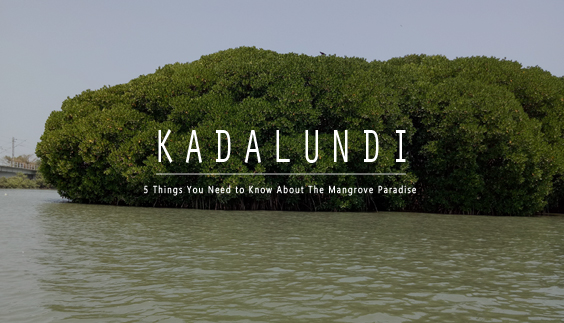

Kottakunnu
Kottakkunnu is a mesmerising garden situated on a hill. Its beauty is often compared with the picturesque Marine Drive in Mumbai. The attraction has a Water Park, an Adventure Park, an Art Gallery, 16D cinema, an Open Air Theatre and a Balloon Park. These amusements make Kottakkunnu a perfect picnic spot.

Kadalundi Bird Sanctuary
Scattered over a cluster of islands on the confluence of the Kadalundipuzha River and the Arabian Sea, this sanctuary is home to over a hundred species of native birds, and around 60 species of migratory birds.